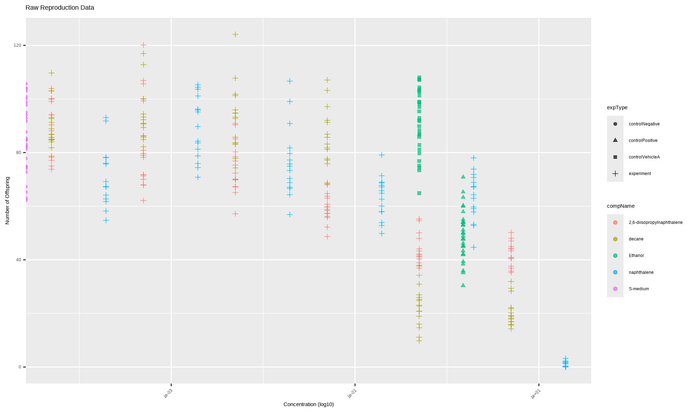
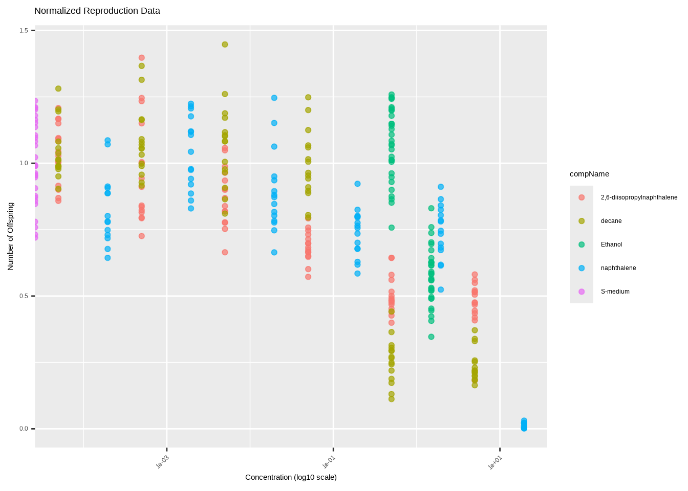
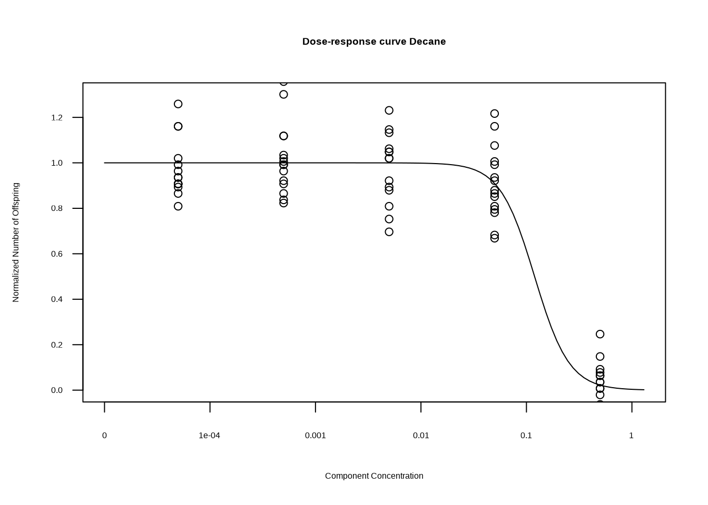
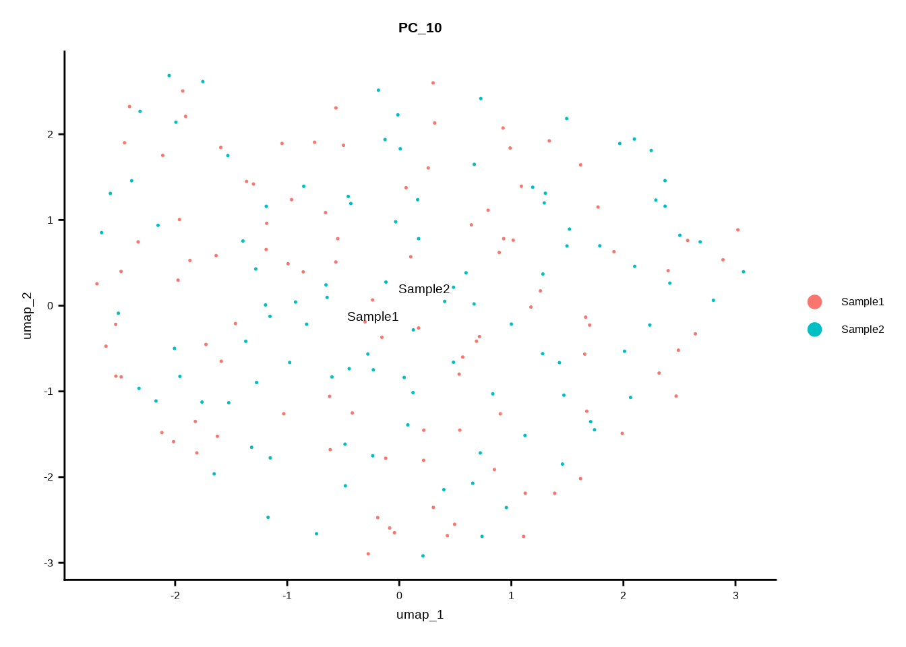
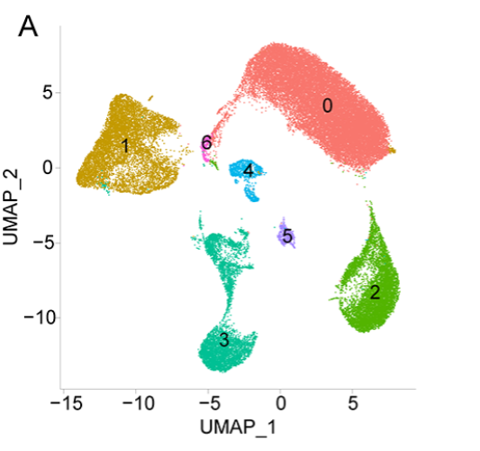

Reproducible science
The purpose of this assignment is to demonstrate my ability to:
- Reproduce research
- Assess an article for reproducibility
Reproduction of data analysis
The dataset CE.LIQ.FLOW.062_Tidydata originates from the HU research group Innovative Testing in Life Sciences & Chemistry.
The most important variables in the dataset are:
RawData: the number of offspring counted
compName: the name of the chemical
compConcentration: the concentration of the chemical
expType: indicates whether the condition is experimental or a control condition
# Libraries
library(readxl)
library(tidyverse)
# Import the data
data <- read_excel("data/CE.LIQ.FLOW.062_Tidydata.xlsx")
# Inspect data
# class(data$RawData)
# class(data$compName)
# class(data$compConcentration)
# class(data$expType)
# compConcentration is a character variable, we need to convert it
data$compConcentration <- as.numeric(data$compConcentration)
# class(data$compConcentration) # compConcentrtaion is a numeric varialbe now Raw data visualization
data %>% ggplot(aes(x = compConcentration,
y = RawData,
color = compName,
shape = expType)) +
geom_jitter(alpha = 0.7) +
scale_x_log10() +
labs(title = "Raw Reproduction Data",
x = "Concentration (log10)",
y = "Number of Offspring") +
theme( axis.text.x = element_text(angle = 45,
hjust = 1) )## Warning in scale_x_log10(): log-10 transformation introduced infinite values.## Warning: Removed 6 rows containing missing values or values outside the scale range (`geom_point()`).
Normalized data visualization
data %>% ggplot(aes(x = compConcentration,
y = normalizedData,
color = compName)) +
geom_jitter(alpha = 0.7) +
scale_x_log10() +
labs(title = "Normalized Reproduction Data",
x = "Concentration (log10 scale)",
y = "Number of Offspring") +
theme( axis.text.x = element_text(angle = 45,
hjust = 1) )
Controls Used in the Experiment
Negative control: C.elegans that weren’t exposed to any chemicals
Vehicle control: Contains only the solvent (ethanol, concentration 0.5), verifies whether solvent itself has an effect on C.elegans Positive control: Contains substance with verified toxic effect on C.elegans(ethanol, concentration 1.5)
Purpose of the Controls
- Vehicle control verifies whether solvent itself has an effect on C.elegans. It’s used for data normalization to separate the active agent’s effects from those of the solvent.
- Negative control establishes a baseline, represents normal biological condition. It ensures that no change is observed when a change is not expected.
- Positive control is used to show what a positive result looks like. It also ensures that testing procedure is capable of producing results when the expected outcome is present.
Why do we normalize data?
We normalize the data to subtract background noise (e.g., the effect of the solvent on the organism) and ensure that the remaining variation represents a true biological or experimental response.
Follow-up research
For the follow-up research, the creation of dose-response curve is recommended.
Step-by-step workflow in R:
Step 1. Install and load the drc package
Step 2. Select data from one chemical
Step 3. Remove concentration = 0 (log-logistic models cannot use zero doses)
Step 4. Fit a log-logistic model: one of the most used dose-response models.
Step 5. Inspect the model
Step 6. Plot the dose-response curve
Step 7. Calculate the IC50 value
0.0.0.1 Example for decane
library(drc) #step 1
data_decane <- data %>% filter(compName == "decane") #step 2
data_decane %>% filter (compConcentration > 0) #step 3## # A tibble: 90 × 35
## plateRow plateColumn vialNr dropCode expType expReplicate expName expDate expResearcher expTime expUnit expVolumeCounted RawData compCASRN compName compConcentration compUnit
## <lgl> <lgl> <dbl> <chr> <chr> <dbl> <chr> <dttm> <chr> <dbl> <chr> <dbl> <dbl> <chr> <chr> <dbl> <chr>
## 1 NA NA 1 a experiment 3 CE.LIQ.FLOW… 2020-11-30 00:00:00 Sergio Reijn… 68 hour 50 18 124-18-5 decane 4.99 nM
## 2 NA NA 1 b experiment 3 CE.LIQ.FLOW… 2020-11-30 00:00:00 Sergio Reijn… 68 hour 50 29 124-18-5 decane 4.99 nM
## 3 NA NA 1 c experiment 3 CE.LIQ.FLOW… 2020-11-30 00:00:00 Sergio Reijn… 68 hour 50 17 124-18-5 decane 4.99 nM
## 4 NA NA 1 d experiment 3 CE.LIQ.FLOW… 2020-11-30 00:00:00 Sergio Reijn… 68 hour 50 19 124-18-5 decane 4.99 nM
## 5 NA NA 1 e experiment 3 CE.LIQ.FLOW… 2020-11-30 00:00:00 Sergio Reijn… 68 hour 50 19 124-18-5 decane 4.99 nM
## 6 NA NA 2 a experiment 3 CE.LIQ.FLOW… 2020-11-30 00:00:00 Sergio Reijn… 68 hour 50 16 124-18-5 decane 4.99 nM
## 7 NA NA 2 b experiment 3 CE.LIQ.FLOW… 2020-11-30 00:00:00 Sergio Reijn… 68 hour 50 18 124-18-5 decane 4.99 nM
## 8 NA NA 2 c experiment 3 CE.LIQ.FLOW… 2020-11-30 00:00:00 Sergio Reijn… 68 hour 50 20 124-18-5 decane 4.99 nM
## 9 NA NA 2 d experiment 3 CE.LIQ.FLOW… 2020-11-30 00:00:00 Sergio Reijn… 68 hour 50 22 124-18-5 decane 4.99 nM
## 10 NA NA 2 e experiment 3 CE.LIQ.FLOW… 2020-11-30 00:00:00 Sergio Reijn… 68 hour 50 28 124-18-5 decane 4.99 nM
## # ℹ 80 more rows
## # ℹ 18 more variables: compDelivery <chr>, compVehicle <chr>, elegansStrain <chr>, elegansInput <dbl>, bacterialStrain <chr>, bacterialTreatment <chr>, bacterialOD600 <dbl>, bacterialConcX <dbl>,
## # bacterialVolume <dbl>, bacterialVolUnit <chr>, incubationVial <chr>, incubationVolume <dbl>, incubationUnit <chr>, incubationMethod <chr>, incubationRPM <dbl>, bubble <lgl>,
## # incubateTemperature <dbl>, normalizedData <dbl>decane_model <- drm (
normalizedData ~ compConcentration,
data = data_decane,
fct = LL.4()
) #step 4
summary(decane_model) #step 5##
## Model fitted: Log-logistic (ED50 as parameter) (4 parms)
##
## Parameter estimates:
##
## Estimate Std. Error t-value p-value
## b:(Intercept) 2.641583 1.017888 2.5952 0.011115 *
## c:(Intercept) 0.238285 0.030066 7.9254 7.486e-12 ***
## d:(Intercept) 1.066149 0.017305 61.6093 < 2.2e-16 ***
## e:(Intercept) 0.119453 0.042934 2.7822 0.006634 **
## ---
## Signif. codes: 0 '***' 0.001 '**' 0.01 '*' 0.05 '.' 0.1 ' ' 1
##
## Residual standard error:
##
## 0.1158965 (86 degrees of freedom)plot(decane_model, log = "x", type = "all", normal = "true", xlab = "Component Concentration", ylab = "Normalized Number of Offspring", ylim = c(0,1.3), xlim = c(0,1.3), main = "Dose-response curve Decane") # step 6
##
## Estimated effective doses
##
## Estimate Std. Error
## e:1:50 0.119453 0.042934To create one graph for all dose-response curves, skip Step 1 and use:
compName_model <- drm ( normalizedData ~ compConcentration, data = data_model, #data_model is filtered data with compConcentration > 0 curveid = compName fct = LL.4() )
To make all graphs, drs plot documentation was used.
Assessment of article reproducibility
In this part of my portfolio, I will evaluate this paper published on the PLOS One website according to these criteria:
library(knitr)
transparency_table <- data.frame(
`Transparency Criteria` = c(
"Study Purpose",
"Data Availability Statement",
"Data Location",
"Study Location",
"Author Review",
"Ethics Statement",
"Funding Statement",
"Code Availability"
),
Definition = c(
"A concise statement in the introduction of the article, often in the last paragraph, that establishes the reason the research was conducted. Also called the study objective.",
"A statement, in an individual section offset from the main body of text, that explains how or if one can access a study’s data. The title of the section may vary, but it must explicitly mention data; it is therefore distinct from a supplementary materials section.",
"Where the article’s data can be accessed, either raw or processed.",
"Author has stated in the methods section where the study took place or the data’s country/region of origin.",
"The professionalism of the contact information that the author has provided in the manuscript.",
"A statement within the manuscript indicating any ethical concerns, including the presence of sensitive data.",
"A statement within the manuscript indicating whether or not the authors received funding for their research.",
"Authors have shared access to the most updated code that they used in their study, including code used for data analysis."
),
`Response type` = c(
"Binary (Yes or No)",
"Binary (Yes or No)",
"Found Value",
"Binary (Yes or No); Found Value",
"Found Value",
"Binary (Yes or No)",
"Binary (Yes or No)",
"Binary (Yes or No)"
),
stringsAsFactors = FALSE
)
kable(
transparency_table,
format = "markdown",
align = c("l", "l", "l"),
caption = "Transparency Criteria Table"
)| Transparency.Criteria | Definition | Response.type |
|---|---|---|
| Study Purpose | A concise statement in the introduction of the article, often in the last paragraph, that establishes the reason the research was conducted. Also called the study objective. | Binary (Yes or No) |
| Data Availability Statement | A statement, in an individual section offset from the main body of text, that explains how or if one can access a study’s data. The title of the section may vary, but it must explicitly mention data; it is therefore distinct from a supplementary materials section. | Binary (Yes or No) |
| Data Location | Where the article’s data can be accessed, either raw or processed. | Found Value |
| Study Location | Author has stated in the methods section where the study took place or the data’s country/region of origin. | Binary (Yes or No); Found Value |
| Author Review | The professionalism of the contact information that the author has provided in the manuscript. | Found Value |
| Ethics Statement | A statement within the manuscript indicating any ethical concerns, including the presence of sensitive data. | Binary (Yes or No) |
| Funding Statement | A statement within the manuscript indicating whether or not the authors received funding for their research. | Binary (Yes or No) |
| Code Availability | Authors have shared access to the most updated code that they used in their study, including code used for data analysis. | Binary (Yes or No) |
PLOS One is a peer-reviewed open-access journal that supports the open-science movement and mandates the sharing of materials and software to ensure reproducibility. In addition, I will replicate a few graphs from the study to assess whether they are easy or difficult to reproduce.
Introduction
Title: Single-cell atlas of gastric cancer reveals malignant epithelial evolution and regulatory reprogramming of the tumor microenvironment (Li et al. 2026)
Reference : Xiulan Li, Mengqi Guo, Yunhan Wen, Bo Long
Affiliations:
Department of Gastroenterology, Hunan Provincial People’s Hospital, The First Affiliated Hospital of Hunan Normal University, Changsha, Hunan, China.
Research Institute of Lanzhou University in Shenzhen, Lanzhou University, Shenzhen, Guangdong, China.
Department Three of General Surgery, The Second Hospital & Clinical Medical School, Lanzhou University, Lanzhou, Gansu, China.
PMID: 42018572
PMCID: PMC13102225
DOI: 10.1371/journal.pone.0347679
Data availability: https://journals.plos.org/plosone/article?id=10.1371/journal.pone.0347679#sec02*\
Research objective: The research objective of this study is to determine:
whether malignant epithelium arises from specific progenitor branches and the molecular timing and ecological conditions of such bifurcation;
whether epithelial–CAF/TAM interaction modules constitute key drivers of proliferation, immune evasion, and matrix remodeling;
which transcription-factor programs govern malignant transformation and could serve as early warning markers and therapeutic targets
Materials and methods summary
This study uses publicly available scRNA-seq data from the GEO database, GSE150290. Data set includes 51 samples with different pathological stages, which represent progression along the Correa cascade:
Chronic Gastritis Superficialis(CGS) (n=3):early inflammation of the stomach lining, no precancrerous changes
Intestinal Metaplasia(IM) (n=2): precancerous stage, stomach cells change into intestine like cells
Gastric Cancer(GC) (n=23): malignant tumor tissue
Adjacent tumor stroma cells for the comparison (n=23)
The data underwent quality control that included filtering of low-quality cells based on gene count, RNA count (∈ [500, 50,000]), mitochondrial(≥15) and hemoglobin content(≥15%). At gene level, they kept features expressed in ≥4 cells to reduce noise. For the downstream processing they:
log-normalized (scale factor 10,000) data
selected highly variable genes using the “vst” (variance stabilizing transformation) method (top 3,000 genes) to fairly identify genes that are truly biologically variable and not just higly expressed
scaled the data linearly
ran principal component analysis (PCA)
performed clustering using the first 10 principal components(PCs) with resolution of 0.1
used UMAP for visualization to show the atlas of GC cells
used epithelial (EPCAM, KRT8), endothelial (VWF, PECAM1), stromal (COL1A1, PTGDS), and immune (PTPRC, CD68, IL1B, CD79A, CD3D, CD3E; mast cell CPA3, TPSAB1) markers for cell-type annotation
This study also identifies malignant epithelial cells using inferCNV, performs cell–cell communication analysis using CellChat, reconstructs pseudotime trajectories to determine the developmental progression of malignant epithelial cells using Monocle2, applies the SCENIC workflow to construct and evaluate transcription factor (TF) regulatory networks, and performs external validation of TFs.
Results summary
After stringent QC and data integration, a total of 215,038 cells were retained for clustering. Cells resolved into seven major lineages:
epithelial
fibroblast
endothelial
myeloid
T cells
B cells
plasma cells
Compared with CGS in terms of composition, IM and GC samples (both tumor and stromal):
↑ B/T cells
↑ myeloid cells
↑ fibroblasts
↓ epithelial cells This epithelial contraction alongside immune/stromal expansion increases as disease progresses.
CNV analysis of 9,218 epithelial cells identified 12 clusters (k=12), separating normal, transitional (proto-malignant), and malignant epithelial states, with malignant clusters showing the highest CNV burden and confinement to tumor tissue.
Trajectory analysis with Monocle2 and GSEA revealed that malignant cells appear toward the end of the trajectory and are not uniform; they comprise at least two transcriptional subtypes: (1) epithelial-like and (2) EMT/inflammation-like malignant cells.
Cell–cell communication wuth CellChat showed strongly increased epithelial interactions, especially with T cells, fibroblasts, and myeloid cells, dominated by the CD44–ECM signaling axis.
SCENIC identified 51 TF regulons. Among them, HNF4A/HNF4G, ETS2, and KLF3 regulated the most abundant target genes, each exceeding 100 targets. Additionally, 21 TFs exhibited distinctively high activity scores in malignant gastric epithelial cells. Several TFs (HNF4A, KLF3, FOSL1, TCF7L2, BCL3, RELB, and ONECUT2) were linked to poor prognosis, while others (CDX2, CDX1, and POLE3) were correlated with favorable outcomes in GC patients.
Briefly, this study not only reveals key mechanisms in the evolution of GC but is also clinically relevant.
Evaluation based on criteria
- Study Purpose
Answer: Yes. The introduction clearly states the objectives and research questions of the study.
“In this study, we integrated scRNA-seq datasets from chronic gastritis (superficial, CGS), IM, GC, and matched adjacent normal tissues. We first used clustering and annotation to precisely locate epithelial populations and combined inferCNV to identify malignant epithelial clones within GC, thereby reducing benign–malignant signal confounding. We then applied cell–cell communication analysis to delineate key interaction axes between tumor-derived epithelial cells and fibroblasts/macrophages; next, trajectory/pseudotime analyses were employed to reconstruct state transitions and branching points from early lesions to malignant transformation; finally, SCENIC was used to resolve transcription-factor networks, defining tumor-specific programs that are activated or repressed, as well as conserved basal epithelial programs. This work aims to address three core questions: (1) whether malignant epithelium arises from specific progenitor branches and the molecular timing and ecological conditions of such bifurcation; (2) whether epithelial–CAF/TAM interaction modules constitute key drivers of proliferation, immune evasion, and matrix remodeling; and (3) which transcription-factor programs govern malignant transformation and could serve as early warning markers and therapeutic targets. Through this integrative strategy, we seek to provide coherent evidence for the cellular ecology and translational biomarkers underlying the initiation and progression of GC.” (Li et al. 2026)
- Data Availability Statement
Answer: Yes. The paper includes a dedicated “Data Availability” section explaining where the datasets and code can be accessed.
- Data Location
Answer: Found Value. Analysis code is included in supplementary materials, they used publicly available in GEO dataset (GSE150290).
- Study Location
Answer: Yes. Information is available in the GEO database.
- Author Review
Answer: Found value. Contact information is available in the supplementary methods documents.
“Correspondences: Yunhan Wen, Email: yunhanwen2014@163.com; Bo Long, Email: longbo_107@163.com.” [S1 Supplementary methods]
- Ethics Statement
Answer: Yes.
“As this study involved computational analysis of publicly available, anonymized data with appropriate consent obtained in the original studies, no additional ethics approval was required.” (Li et al. 2026)
- Funding Statement
Answer: Yes
“Funding: This work was supported by the Higher Education Innovation Fund Project of Gansu Provincial Department of Education (Grant No. 2024B-020). There was no additional external funding received for this study. The funders had no role in study design, data collection and analysis, decision to publish, or preparation of the manuscript.” (Li et al. 2026)
- Code Availability
Answer: Yes. Custom R code, analysis scripts, and computational workflows used in this study are provided as Supplementary Material (Supplementary R code.zip).
Code reproducibility
Supplementary code includes 5 scripts:
01_Data_preparation.R
02.infercnv.R
03.calculate cnv score.R
04.GC-cellchat.R
05.TF analysis.R
I examined the code and attempted to replicate the results. However, the supplementary code folder lacked the data used by the authors. I tried loading the official dataset and running it with the provided code, but the authors most likely used a preprocessed and already formatted version of the dataset. As a result, an exact replication of the code using the same dataset became impossible. For this issue, 1 point will be deducted.
The code comments were written in inconsistent styles, and some comments were in Chinese, which negatively affected the overall readability and styling. However, this is not a critical issue, so I will deduct 0.5 points.
Overall, the code readability was fairly intuitive, although the code could have been cleaner. Therefore, another 0.5 points will be deducted.
The supplementary documentation clearly explains all parameter choices used in the code. Theoretically, if I had been provided with the formatted dataset, I would have been able to replicate the results presented in the paper. However, I could not verify this in practice.
To still attempt reproducing the code, I will generate fake datasets for the count matrix and metadata, create a Seurat object, and then try to reproduce one of the figures.
library(Seurat)
library(harmony)
library(ggplot2)
# AI generated fake data set
set.seed(123)
# Fake count matrix: 1000 genes x 200 cells
counts <- matrix(
rpois(1000 * 200, lambda = 5),
nrow = 1000,
ncol = 200
)
# Add some realistic gene names
rownames(counts) <- paste0("Gene", 1:1000)
rownames(counts)[1:10] <- paste0("MT-", 1:10)
rownames(counts)[11:30] <- paste0("RPL", 1:20)
rownames(counts)[31:40] <- paste0("HB", 1:10)
colnames(counts) <- paste0("Cell", 1:200)
# Make ribosomal genes high enough to pass percent_ribo > 3
counts[11:30, ] <- counts[11:30, ] + rpois(20 * 200, lambda = 20)
# Make hemoglobin genes low enough to pass percent_hb < 1
counts[31:40, ] <- rpois(10 * 200, lambda = 0.1)
# Keep mitochondrial genes low enough to pass percent_mito < 15
counts[1:10, ] <- rpois(10 * 200, lambda = 1)
# Fake metadata
metadata <- data.frame(
orig.ident = rep(c("Sample1", "Sample2"), each = 100),
Sample_source = rep(c("Tumor", "Normal"), each = 100),
S.Score = rnorm(200, mean = 0, sd = 0.2),
G2M.Score = rnorm(200, mean = 0, sd = 0.2),
row.names = colnames(counts)
)
# Create Seurat object
my_obj <- CreateSeuratObject(
counts = counts,
meta.data = metadata
)
# Add QC percentages needed by your code
my_obj[["percent_mito"]] <- PercentageFeatureSet(my_obj, pattern = "^MT-")
my_obj[["percent_ribo"]] <- PercentageFeatureSet(my_obj, pattern = "^RPL")
my_obj[["percent_hb"]] <- PercentageFeatureSet(my_obj, pattern = "^HB")
# Code from 01_Data_preparation.R
## 5.6 filter genes and cells----
selected_c <- WhichCells(my_obj,
expression = nFeature_RNA > 200 &
nFeature_RNA <5000 &
nCount_RNA > 500 &
nCount_RNA < 50000)
length(selected_c)## [1] 200## filter genes
#selected_f <- rownames(my_obj)[Matrix::rowSums(my_obj@assays$RNA@counts > 0 ) > 3] #code fails here, but it's my fault because i use the wrong version of seurat
selected_f <- rownames(my_obj)[Matrix::rowSums(LayerData(my_obj, assay = "RNA", layer = "counts") > 0) > 3] # new syntax
length(selected_f)## [1] 1000## [1] 1000 200## [1] 1000 200##
## Sample1 Sample2
## 100 100##
## Sample1 Sample2
## 100 100## (2).filter:mt/ribo/hb
selected_mito <- WhichCells(my_obj.filt,
expression = percent_mito < 15)
selected_ribo <- WhichCells(my_obj.filt,
expression = percent_ribo > 3)
selected_hb <- WhichCells(my_obj.filt,
expression = percent_hb < 1)
length(selected_mito)## [1] 200## [1] 200## [1] 200## [1] 1000 200## [1] 1000 200## [1] 1000 200##
## Sample1 Sample2
## 100 100## 6.1 NormalizeData----
my_obj <- NormalizeData(my_obj.filt,
normalization.method = "LogNormalize",
scale.factor = 10000)
## 6.2 FindVariableFeatures ----
my_obj <- FindVariableFeatures(my_obj,
selection.method = "vst",
nfeatures = 5000)
## 6.3 ScaleData ----
## 这里我们选择了vars.to.regress 细胞周期
table(my_obj$Sample_source)##
## Normal Tumor
## 100 100my_obj <- ScaleData(my_obj,
vars.to.regress = c("S.Score", "G2M.Score"),
features=rownames(my_obj))
#saveRDS(my_obj,
#file=paste0(Data_saveloc,"/02_",data_type,"_obj_ScaleData.rds")) #no need to save data
feature_genes <- VariableFeatures(object = my_obj)
g2m.genes <- Seurat::cc.genes.updated.2019$g2m.genes
s.genes <- Seurat::cc.genes.updated.2019$s.genes
g2m.genes <- as.data.frame(g2m.genes)
names(g2m.genes) <- "Gene"
s.genes <- as.data.frame(s.genes)
names(s.genes) <- "Gene"
cell_cycle_genes <- rbind(g2m.genes, s.genes)
feature_genes <- feature_genes[!feature_genes %in% cell_cycle_genes$Gene]
## 6.4 RunPCA ----
my_obj <- RunPCA(my_obj,
features = feature_genes,
npcs = 20, #originally it had 100, but i reduced it to 20 because I have a small fake dataset
verbose = FALSE)
## 6.5 RunHarmony ----
my_obj <- RunHarmony(my_obj,
group.by.vars = "orig.ident",
max_iter = 40) #in new version parameter max.iter.harmony was replaced with max_iter## Initializing centroids## [1] 1000 200#save(my_obj,
#file=paste0(Data_saveloc,"/03_",data_type,"_obj_RunHarmonyData.Rdata")) #no need to save this data
## 3.VlnPlot 颜色设置----
my36colors <-c('#E5D2DD', '#53A85F', '#F1BB72', '#F3B1A0', '#D6E7A3', '#57C3F3', '#476D87',
'#E95C59', '#E59CC4', '#AB3282', '#23452F', '#BD956A', '#8C549C', '#585658',
'#9FA3A8', '#E0D4CA', '#5F3D69', '#C5DEBA', '#58A4C3', '#E4C755', '#F7F398',
'#AA9A59', '#E63863', '#E39A35', '#C1E6F3', '#6778AE', '#91D0BE', '#B53E2B',
'#712820', '#DCC1DD', '#CCE0F5', '#CCC9E6', '#625D9E', '#68A180', '#3A6963',
'#968175'
)
## 5.循环进行PC10-PC50----
pcNO=10
res=0.02
my_obj <- RunUMAP(my_obj,reduction = "harmony", dims = 1:pcNO)
p1 <- DimPlot(my_obj,
reduction = "umap",
group.by = "orig.ident",
pt.size = 0.1,
label = T,
repel = T,
label.size = 5) + ggtitle(paste0("PC_",pcNO))
print(p1)
The good news is that the code runs, Harmony/UMAP pipeline executes, Seurat object structure is valid. The bad news is that the synthetic data I generated using AI is entirely random, so no meaningful clusters appear. I also found no usage of the color theme my36colors anywhere in the codes, making it redundant and safe to remove. Below is the original figure generated using the same code:

Figure 2: 10A. Independent single-cell validation of epithelial malignancy and inferred copy-number alterations in the GSE163558 cohort. UMAP visualization of 53,338 cells from GSE163558 clustered using PC=10 and resolution=0.02, yielding seven major cell clusters.
I suspect they also did not use labels directly in the code and instead added them manually, although I could be mistaken. Overall, I would give the code a reproducibility score of 3/5.
Conclusion
The results of the reproducibility analysis and evaluation based on the given criteria appear plausible. Overall, I would say that this study is solid in terms of both documentation and presentation. The study is also clinically relevant and provides a good foundation for future research. However, the reproducibility of the code can only be fully assessed using the original processed datasets, which were not provided. Therefore, I cannot determine whether the study is fully reproducible.
To improve reproducibility, I would recommend creating a single GitHub repository containing all datasets and scripts, as well as making the code comments more consistent and fully written in English.